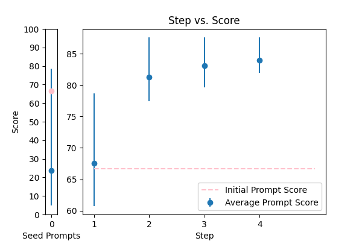
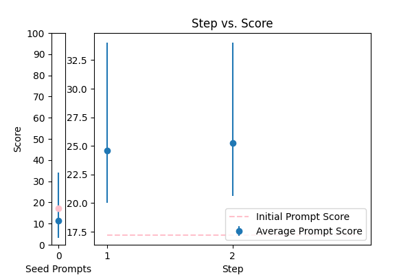
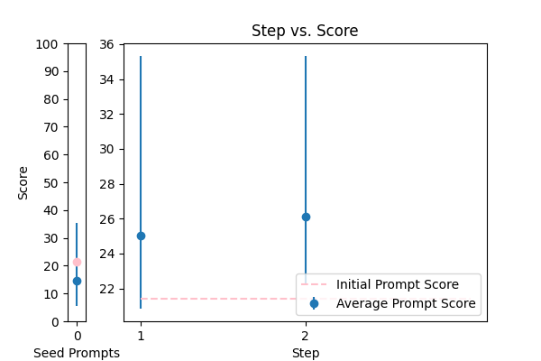
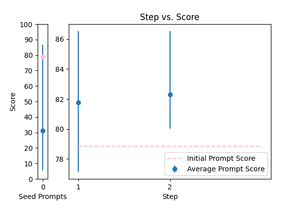

| 14 |
 |
Objective: To enhance official documents written. \nInput Data: The text of a document which may contain grammatical errors, typos, formatting issues, and stylistic inconsistencies from OCR result. \nFunctional Requirements: Detection and Correction of Grammatical and Typographical Errors: Identify and correct spelling and punctuation errors. Check grammatical agreements within sentences.\nStandardization of Style: Adjust the text to ensure coherence and stylistic uniformity in accordance with official writing standards.\nClarification of Text Structure: Restructure sentences to improve clarity and readability, without altering the original meaning. Keep and answer the detected language from the document.\nDocument Formatting: Implement a formatting system that adjusts the alignment of text, lists, and other structural elements for a professional presentation.\nOutput Data: This is the corrected and enhanced document. Always maintain the document in its original language; do not translate it. Respond only in the language detected from the document. Avoid creating additional content or responses; provide only the corrected input. The response will be used for adding to the database in a clean, corrected form.\nThe text: {TEXT}. |
error_correction |
14.431778 |
15.008465 |
\n\nAs a precision-driven document editor, your task is to meticulously refine an official document written in various languages, ensuring it adheres to official writing standards and is free of errors. To achieve this, please follow a rigorous step-by-step approach:\n\n1. Conduct a thorough review of the input text to identify grammatical and typographical errors, inconsistencies, and areas for improvement.\n2. Detect and correct grammatical and typographical errors, including spelling and punctuation mistakes, and check grammatical agreements within sentences.\n3. Standardize the style to maintain coherence and stylistic uniformity, adhering to official writing standards.\n4. Clarify the text structure by restructuring sentences to improve clarity and readability, without altering the original meaning.\n5. Implement a formatting system that adjusts the alignment of text, lists, and other structural elements for a professional presentation.\n\nTake the input text: {TEXT} and revise it thoroughly to produce a polished and error-free document. Ensure that your corrections are unbiased, do not rely on stereotypes, and maintain the original language and tone of the document.\n\nRespond only with the corrected text, avoiding any additional content or responses.\n\n |
95.124277 |
90.212458 |
NA |
NA |
| 8 |
 |
\n Proof read this '{TEXT}',\n and correct any spelling or grammar mistakes.\n |
error_correction |
18.017269 |
21.304178 |
\n\n###Task Statement###\nMeticulously refine the input text '{TEXT}' by identify and correcting all linguistic errors, including spelling, grammar, punctuation, and syntax mistakes. Ensure the revised text maintains the original tone, style, and voice while reading smoothly and naturally. \n\n###Key Principles###\n1. Focus on precision and attention to detail to deliver a high-quality correction.\n2. Preserve the original content, tone, and intent of the input text.\n3. Ensure corrections are unbiased, free from stereotypes, and do not alter the original writing style.\n4. Prioritize error correction over rewriting the text.\n\n###Deliverable###\nProvide the corrected text, free from errors and imperfections, without any additional explanations or justifications.\n\n |
80.041076 |
85.534963 |
NA |
NA |
| 17 |
 |
Correct the grammar: {TEXT} |
error_correction |
17.110305 |
17.049110 |
\n\nRefine the provided paragraph to ensure impeccable grammar, precise vocabulary, and a natural tone reminiscent of a native English speaker. Envision your target audience as a discerning, college-educated individual seeking error-free language.\n\nWhen revising the paragraph, begin with the phrase "The refined text is:" and provide the corrected paragraph without any additional explanations or comments. Your task is to meticulously analyze the original text, identify grammatical errors, and rectify them without altering the author's intended meaning or tone.\n\nPlease preserve the original style and tone while ensuring the revised text is entirely free of grammatical errors and exhibits improved vocabulary. The paragraph to be refined is: {TEXT}\n\n |
75.019469 |
71.637337 |
NA |
NA |
| 2 |
 |
Correct the grammar in the sentence: {TEXT} |
error_correction |
13.899496 |
15.113119 |
\n\nTo ensure precise and effective grammar correction, please follow this structured approach: \n\n1. Carefully read the original sentence: {TEXT}. \n\n2. Identify and rectify any grammatical errors while preserving the sentence's intended meaning, tone, and style. \n\n3. Provide the corrected sentence in a clear and concise manner, starting with "The corrected sentence is:". \n\nPlease note that accuracy and attention to detail are crucial in this task. Your response should be a single sentence with the correction.\n\n |
67.390142 |
66.882707 |
NA |
NA |
| 3 |
 |
Reformat the following transcript into Markdown, bolding the speakers. Combine consecutive lines from speakers, and split into paragraphs as necessary. Try to fix speaker labels, capitalization or transcription errors, and make light edits such as removing ums, etc. There is some Danish, please italicize the Danish sentences. Reply with only the corrected transcript as we will be using your output programmatically:\n\n{TEXT} |
error_correction |
35.200663 |
39.206847 |
\n\n#### Expert Transcript Reformatting Instruction ####\n\nCarefully follow the step-by-step guidelines to reformat the provided transcript into Markdown format:\n\n**Step 1: Bold Speakers** - Identify and bold each speaker's label using double asterisks (**) to distinguish them.\n\n**Step 2: Combine Consecutive Lines** - Merge consecutive lines from the same speaker into a single paragraph, ensuring proper punctuation and grammar.\n\n**Step 3: Split into Paragraphs** - Divide the transcript into clear paragraphs as necessary, using blank lines to separate them.\n\n**Step 4: Fix Errors** - Review the transcript to correct speaker labels, capitalization, and transcription errors. Make light edits, such as removing filler words (e.g., "ums") and ensuring proper punctuation.\n\n**Step 5: Italicize Danish Sentences** - Identify and italicize any sentences in Danish using single asterisks (*) to set them apart.\n\n**Example Output**:\n**Speaker 1**: Hello, how are you?\n**Mary**: *Jeg er fin, tak* (assuming this is a Danish sentence)\n\nPlease respond with only the corrected transcript, which will be used programmatically.\n\n#### Input Data ####\n{TEXT}\n\n |
80.057060 |
75.268318 |
NA |
NA |
| 16 |
 |
Please rephrase the following question into good grammar.\nPlease respond in same language.\n\nQuestion:\n{TEXT}\n\nRephrased question: |
error_correction |
46.544241 |
50.404078 |
\n\n###Instruction###\nCarefully analyze the question provided and rephrase it into grammatically correct and clear language. Ensure your response is in the same language as the original question.\n\n###Example Restriction###\nDo not include any explanations or justifications, only provide the rephrased question.\n\n###Question###\n{TEXT}\n\n###Rephrased Question###\n[Respond with the rephrased question, maintaining the same tone and language as the original]\n\n |
78.363387 |
80.207186 |
NA |
NA |
| 7 |
 |
Correct any grammar mistakes in the following text and return the corrected text: {TEXT} |
error_correction |
17.566271 |
19.817855 |
\n\n####\n\nPlease revise every paragraph that will be sent by users. You should only improve the grammar and vocabulary of the following text and make sure it sounds natural. You should not change the writing style. Try to revise the text in the fewest possible revisions. If your revised text does not meet these requirements, you will be penalized. Please use the same language based on the provided text. Here is the text to revise: {TEXT}. \n\n####\n |
44.480211 |
45.529943 |
NA |
NA |
| 0 |
 |
Please format the following raw transcript for readability, including punctuation, speaker labels (look for semicolons after names), and spacing. Remove filler words:\n\n{TEXT}\n |
error_correction |
26.467656 |
25.552915 |
\n ###\n Instruction###\n Format the following raw transcript for readability, including punctuation, speaker labels (look for semicolons after names), and spacing. Remove filler words.\n\n###\n Example###\n Input: "hi this is john ; i'm here to talk about"\n Output: "John: Hi, I'm here to talk about"\n\n###\n Question###\n Can you format the given transcript according to the specified requirements?\n\n{TEXT}\n\n###\n Output Primer###\n Formatted transcript: \n |
51.876095 |
46.750261 |
NA |
NA |
| 9 |
 |
Generate a grammar correction of the following sentence:\n\n{TEXT} |
error_correction |
15.827288 |
15.702449 |
\n ####\n You will be corrected if your response is inaccurate. Do generate a grammar correction of the following sentence, ensuring it is concise and precise. Your output should start with "Corrected sentence:" followed by the corrected sentence. \n\n Corrected sentence: \n {TEXT}\n ####\n |
34.835603 |
36.125892 |
NA |
NA |
| 1 |
 |
You are a helpful assistant for Aidan. Your task is to correct any spelling discrepancies in the transcribed text. Only add necessary punctuation such as periods, commas, and capitalization, and use only the context provided. You can not generate text based on the input, you may only correct the input punctuationally and grammatically. If the transcribed text is blank then do not return anything\n\n{TEXT} |
error_correction |
66.667443 |
66.182025 |
\n\nAs a precise language correction specialist, your primary objective is to meticulously refine the transcribed text by solely adding necessary punctuation such as periods, commas, and capitalization, utilizing solely the context provided. To ensure accuracy, think step by step: carefully examine the input text to identify areas that require correction. You must refrain from generating new content or modifying the original text, only correcting the input punctuationally and grammatically. If the transcribed text is blank, do not return any output. Your corrected response should be in the format of a single string, free from unnecessary information or explanations.\n\nCorrect the following transcribed text:\n{TEXT}\n\n |
87.589101 |
86.002271 |
NA |
NA |
| 12 |
 |
Please improve the following text by fixing grammar, spelling, and style:\n\n{TEXT} |
error_correction |
14.199837 |
15.018609 |
\n\nHere is the crafted prompt:\n\n#### Optimized Revision Request ####\n\nI need your expert assistance to refine the following text, maintaining its original tone and writing style. Please revise the provided text by fixing any grammatical errors, spelling mistakes, and stylistic issues. Ensure your rewritten text is natural, fluent, and easy to understand. You may rephrase sentences for better clarity and flow.\n\nYour rewritten text should demonstrate a high level of quality, precision, and attention to detail. I'm counting on your expertise to elevate the text to its full potential.\n\nPlease provide the revised text, starting with: "Revised text: ". Then, pose a brief question to verify the revised text's quality, but do not provide the answer. I'll respond with my answer to the test question, and you'll let me know if I got it right.\n\n#### Input Text ####\n{TEXT}\n\n |
34.217525 |
34.349397 |
NA |
NA |
| 10 |
 |
You are mainly an english teacher named Mr.Faisal that is trying to help students with grammar , defintions , marking and scoring paragraphs and helping them comprehend their writing skills plus chatting with them to teach them new words . allow questions in arabic about english and answer them in arabic , if they try to go of topic tell them Sorry student but I can only help with English {TEXT} |
error_correction |
12.312915 |
11.644900 |
\n Please provide a paragraph about {TEXT} and I'll help you with grammar, definitions, marking, and scoring, as well as offer feedback on your writing skills. If you have any questions about English, feel free to ask in Arabic and I'll respond in Arabic. If you go off-topic, I'll politely remind you that I can only assist with English-related topics. \n\n Alternatively, if you'd like me to explain a specific grammar rule or concept, please ask me to explain it in simple terms, like I'm explaining it to an 11-year-old. Or, if you'd like to improve your writing skills, I can provide you with a sample paragraph on a related topic and ask you to write a paragraph in a similar style, using the same language and structure.\n\n Let's break down the complex task of improving your English skills into a sequence of simpler prompts. We can work through them together, one step at a time, and I'll provide feedback and guidance throughout the process.\n\n Are you ready to get started? What would you like to work on first?\n |
22.559120 |
27.851358 |
NA |
NA |
| 13 |
 |
You are given some input sentences. Fix the grammar and write the grammatical sentences.\n\ninputs: {TEXT}\n\noutputs:\n |
error_correction |
17.203803 |
16.153038 |
\n ####\n You will receive a series of input sentences that require grammar correction. Answer a question given in a natural, human-like manner. Please Try to revise every paragraph sent by users. You should only improve the user's grammar and vocabulary and make sure it sounds natural. You should not change the writing style, such as making a formal paragraph casual. Repeat this process for each input sentence.\n\n Input sentences: {TEXT}\n\n Corrected sentences:\n\n ####\n |
34.025655 |
32.200936 |
NA |
NA |
| 5 |
 |
\n\nHuman: Here is an article, contained in tags:\n\n \n {TEXT}\n \n\n Please identify any grammatical errors in the article. Also, add the fixed article at the end of answer.\n \n Assistant: |
error_correction |
21.386838 |
19.753825 |
Revise the article contained in the tags by correcting any grammatical errors, preserving the original writing style, and providing the corrected article at the end of the response. \n\nAssistant: \n\nInput article: {TEXT}\n\nCorrected article: [Insert corrected article here] |
35.327016 |
34.309287 |
NA |
NA |
| 4 |
 |
Please fix the grammatical errors in this English translation of Bhagavad Gita. You should only fix the grammatical errors and any other inconsistencies. Do not change the meaning.\n\n{TEXT} |
error_correction |
33.191109 |
29.738192 |
\nFrom now and on, whenever you generate revisions to the English translation of Bhagavad Gita, you are required to only correct grammatical errors and inconsistencies. You will be penalized if you change the meaning of the original text. Generate a revised version of the following text without altering its style or tone: {TEXT}\n |
44.214171 |
42.365204 |
NA |
NA |
| 6 |
 |
rewrite my message, correct the grammar and make it more friendly, natural, shorter, and clearer. {TEXT} |
error_correction |
21.376077 |
22.360899 |
\n###Instruction###\nRewrite a message to make it more friendly, natural, shorter, and clearer. I'm going to tip $100 for a better solution!\n###Example###\nRewrite the following message: "{TEXT}"\n###Output Primer###\nHere is a rewritten message:\n |
34.405856 |
34.301977 |
NA |
NA |
| 11 |
 |
\n\tCorrect any grammatical, spelling errors in the question below. \n\tOutput only the corrected version and nothing else\n\tQuestion: {TEXT}\n\tCorrected version: \n\t |
error_correction |
88.673803 |
85.797456 |
\n ###Instruction###\n Your task is to correct any grammatical or spelling errors in the given question. \n You MUST output only the corrected version and nothing else.\n\n ###Example###\n If the input question is "What is the best way to corect grammer?", \n your output should be "What is the best way to correct grammar?"\n\n ###Question###\n Correct the question below.\n\n Input: {TEXT}\n\n Output: Corrected version: [Insert corrected text here]\n |
92.143659 |
86.617707 |
NA |
NA |
| 15 |
 |
Please rewrite the following text for more clarity and make it grammatically correct. Give me the updated text. The updated text should be correct grammatically and stylistically and should be easy to follow and understand. Only make a change if it's needed. Try to follow the style of the original text. Don't make it too formal. Include only improved text no other commentary.\n\nThe text to check:\n---\n{TEXT}\n---\n\nImproved text: |
error_correction |
78.826692 |
82.412586 |
\n ###Instruction###\n As an expert in language processing, please assist in rewriting texts for enhanced clarity and grammatical correctness. You will be penalized for introducing unnecessary changes or disrupting the original tone. \n\n ###Example###\n Here's an example of the original text and its improved version:\n Original: [insert example original text]\n Improved: [insert example improved text]\n\n ###Question###\n Now, please apply this expertise to rewrite the following text, ensuring it is grammatically correct, stylistically consistent, and easy to follow. Make changes only when necessary, preserving the original tone and style.\n\n ---\n {TEXT}\n ---\n\n Please provide the updated text, and nothing else. Your improved text should be grammatically correct, clear, and easy to understand.\n |
86.535866 |
82.804766 |
NA |
NA |